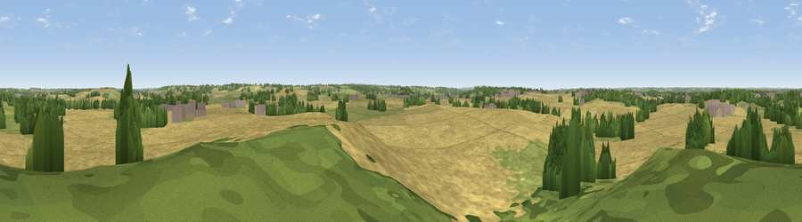

Viewpoint near Bishop's Tachbrook
#39866 in England · top 86% of its area beats it · near Bishop's Tachbrook · access?Where it is
The exact computed spot (SP 32925 61075). Click the marker for map links.
Public access: no public right of way or access land is recorded at this exact spot — it may be on private land. Computed from Natural England's CRoW access layer and OpenStreetMap rights of way — not the legal definitive map. Always verify locally.
The view, rendered

A 360° render of this exact spot computed from the terrain model, tree cover and land cover — summer colours, afternoon light, calibrated against photographs of famous viewpoints. Real trees, hedges and buildings will differ in detail.
The panorama
Grey silhouette: terrain skyline in each direction (720 bearings, Earth curvature and refraction included). Dashed green: skyline with trees (+15 m) and buildings (+8 m) as obstacles. Blue strip: how far the ground is visible on each bearing.
Where the view opens
Wedge length = distance to the farthest visible ground on that bearing (vegetation-aware). Rings at 10, 25 and 50 km.
What fills the view
68% cropland · 20% grassland · 9% woodland · 3% built-up
Angular shares of the visible panorama (visual magnitude), not map area. Landscape diversity 0.39 (0–1 Shannon).
Key numbers
More beautiful places nearby
The staircase of upgrades: each row has a higher view potential than everything closer. Driving times are estimates from straight-line distance, calibrated against real road routing — check an actual route before setting out.
| Place | Direction | Drive | Score |
|---|---|---|---|
| Crown Hill | NE · 3 km | ~6 min | 41.7 |
| Viewpoint near Wasperton | WSW · 8 km | ~16 min | 46.8 |
| Viewpoint near Northend | SE · 11 km | ~21 min | 65.3 |
| Viewpoint near Northend | SE · 11 km | ~21 min | 66.0 |
| Viewpoint near Northend | SE · 12 km | ~22 min | 69.7 |
| Viewpoint near Northend | SE · 12 km | ~22 min | 70.3 |
| Viewpoint near Radway | SSE · 14 km | ~25 min | 71.7 |
| Viewpoint near Meon Vale | SW · 22 km | ~36 min | 77.0 |
52.24688, -1.51917 · source: screening · position refined by local search. Computed location — check access rights before visiting.